Posse
Desktop Website
Client
Posse
Duration
- Two weeks
Team
- Daniela Rytova
- Mark Marshall
Brief
.
The Project
The client (Transport NSW & City of Sydney) was looking for a digital means to to make traveling a more easy and convenient customer experience. The aim was to increase ridership of public transportation, specifically during off-peak times, in order to decrease traffic congestion on roads and to improve access to the CBD.
Features
- OmniGraffle
- Axure
- KeyNote
- Adobe Photoshop
- Visual Mockup
- Excel, Word
- Data Sorting
- Competitor Analysis
- Camera
Kick off meeting
We started by introducing ourselves to the client and discussing the scope of the problem. We talked about several oportunities and their new direction. We were asked to evaluate their place in the market and look into the direct competitors for beacon technology.
 30th June 2014
30th June 2014
Heuristic Analysis
We then carried out a heuristic analysis on both the desktop and mobile platform and then ran through a few user flows incorporating both. We found that the desktop flow was not the same as the mobile and it would be difficult for users to transition between platforms. There were also several improvements that could be made to the overall experience for both platforms.
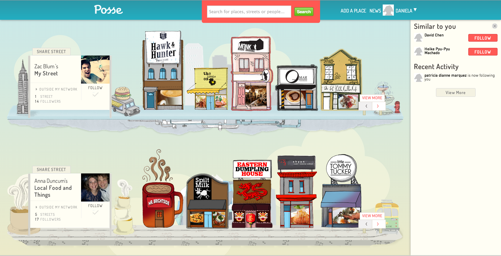 30th June 2014Competitive Analysis
I carried out a competitive analysis to see where Posse sits with its direct competitors in Australia and globally. I also looked into apps offering beacon and mobile ordering/payment technology. We found several competitor apps offering both services but none where Australian. We identified the gap in the market.
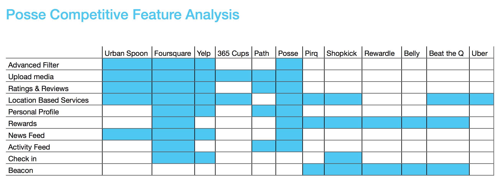 30th June 2014Second Meeting
We went to Posse headquarters for the second meeting. We sat down with the founder and the rest of the team and ran them through our findings. We also discovered they were releasing a new app for mobile which was still in beta stage. Following this meeting with agreed to shift the project in a different direction. We agreed to redesign the overall user experience for desktop with focus on the "Ultimate Discovery" process the founder wanted for their users.
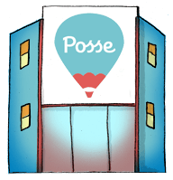 30th June 2014Contextual Inquiry
The next step was to conduct contextual analysis with users to validate our findings and dig deeper into the usability issues on the site. Using the same desktop to mobile user flow we created earlier we took 3 users on the discovery journey. We got them to search for and "wishlist" a place they would like to go and then took them to the app in order to find it. 2 out of the 3 instances were successful, on the third, the users was unable to find the place because of an incomplete address. This gave us a few key insights in into the underlaying issues
 Jan 14
Jan 14
Survey
We created a survey in hopes of further validating our findings and sent it out to Posse users through our contact in the company. However we only got a few responses and some where from the staff so we decided we couldn't use this data. The few results we received from users validated our assumptions and created an overall impression of their pain points.
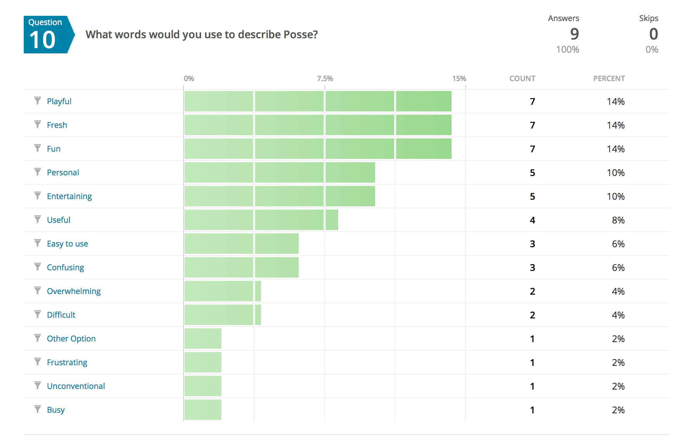 Jan 14Affinity Mapping
We created an affinity map in order to better categorize the results from contextual analysis. We soon started to see patterns emerge. The users were confused upon landing and felt like they needed to "learn the language" of the site before they could use it. They were frustrated by a lack of content and spent some time learning the interface.
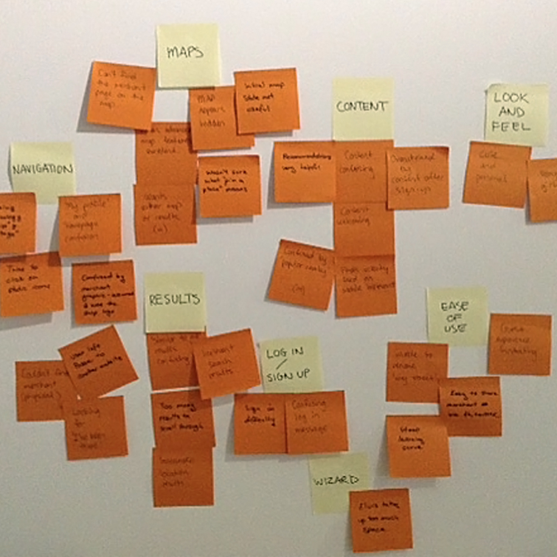 Jan 14"Ultimate Discovery"
We decided to dig deeper and try to understand what made an ultimate discovery process. We took it out of the digital space and asked people to recall a time when they have had this experience, to explain the situation and how they felt at the time. We interviewed five people and all recalled different experiences, some talked about this childhood experience, some about travel and others about sport but there were clear patterns evident in each story (across both genders). We narrowed it down to five: being challenged, new/different, spontaneous, freedom to explore and being flexible.
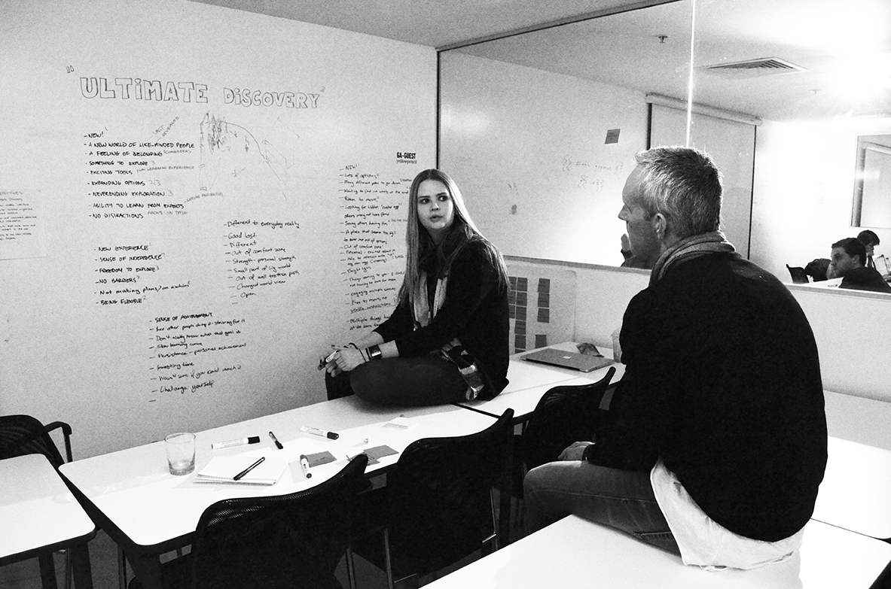 Jan 14Brainstorming
Using the research as a guide we set out on a brainstorming session. I came up with close 30 different ideas for features. We then debated and challenged each feature to ensure only quality ideas were left. We narrowed it down to news landing page, events page, groups and guides, meet-ups, new structure for profile, ask and hot-spots map.
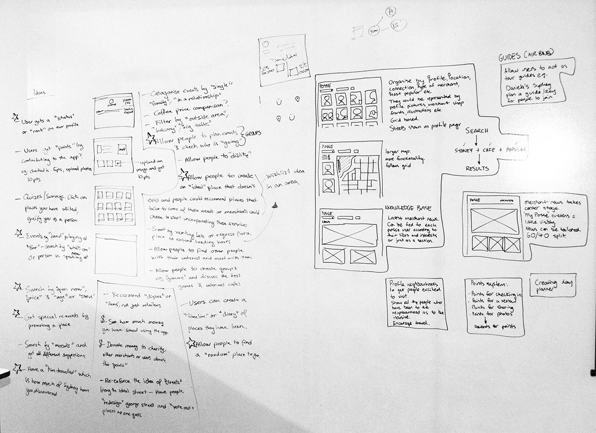 Jan 14Feature Prioritization and Sitemap
We put it out to the users to tell us which features they liked best and would want to use. We created a sitemap to help guide us in the sketching phase.

 Jan 14
Jan 14
Personas and User Flows
We were provided the personas by Posse so we created user flows to help understand how a user would interact with the new features. We looked at what information was crucial at each step of decision making process. We also thoroughly analysed the discovery process to ensure that users didn't have to struggle for information and were provided with helpful suggestions.
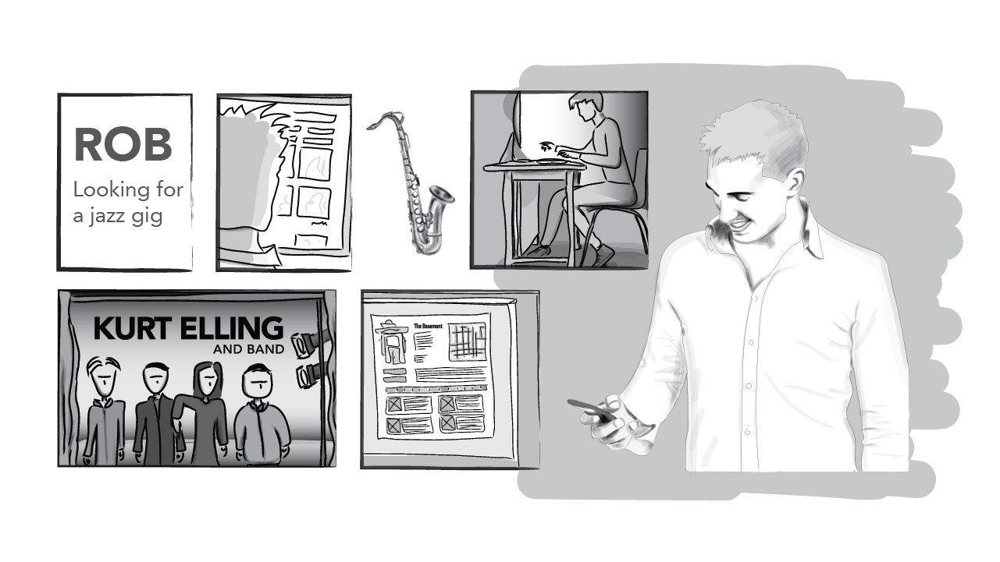 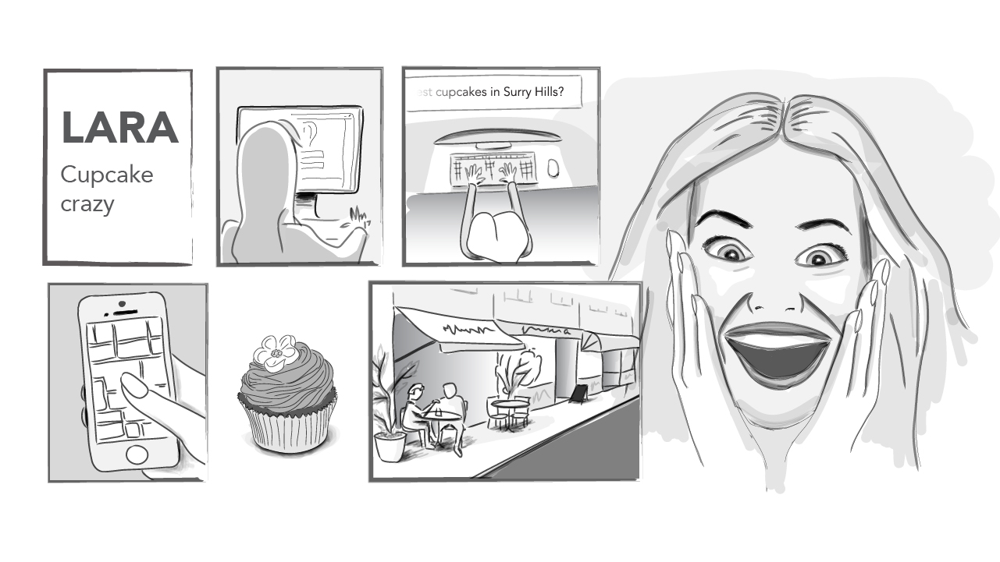 Jan 14Sketching
We created several different versions for the interface and page layouts. Due to the short time frame we only did one round of testing with three users on paper prototypes. We got some mixed results because users found it hard to imagine the features working at low fidelity.
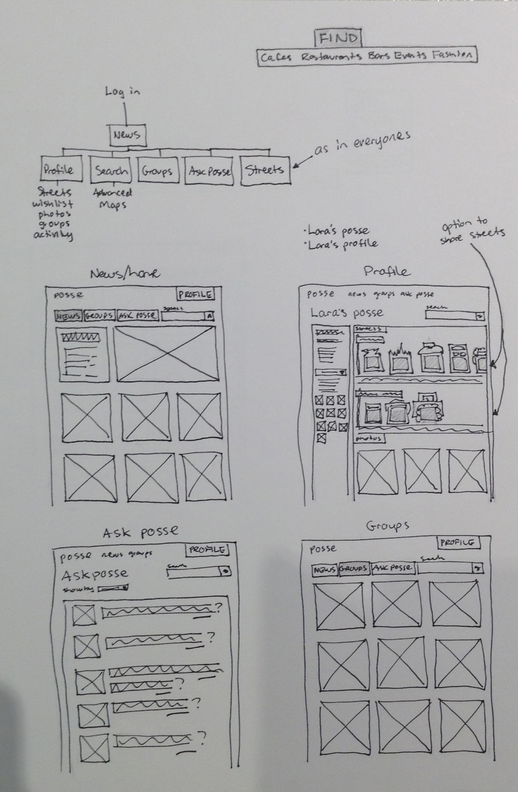 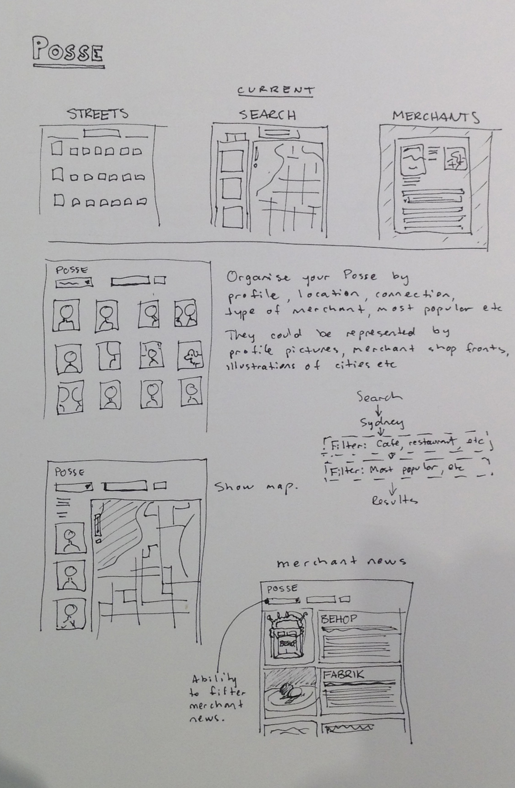 Jan 14Low Fidelity Prototype & Sketching with users
I created the first low fidelity prototype to help our users understand how the pages would look and function. We did a round of testing on five users with just the three key pages in static screens. The users responded well and we got encouraging positive feedback. We got different users to sketch out how they see this interface working
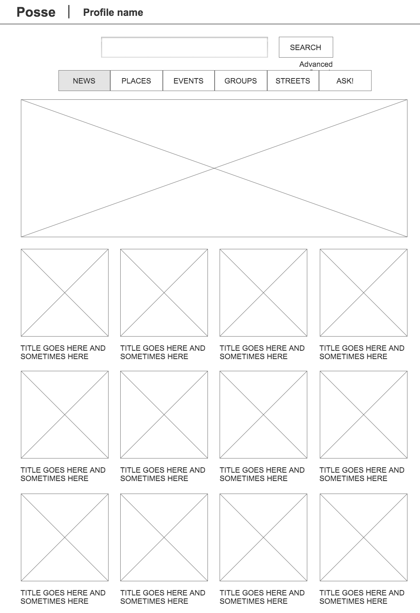 Jan 14A/B Testing
We came up with a second layout/different mental model for the features. We presented both versions to users and got them run us through their thought process. We had consistent positive feedback for version A with some attributed from version B. We realized the perfect interface was a mix of the two versions.
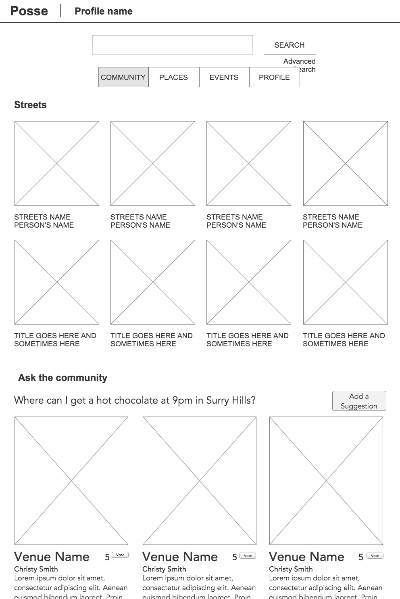 Jan 14Second Prototype
I created another prototypes which was a combination of the two versions from A/B testing. I created all the pages and put them side by side for users to analyse. This version was slightly higher fidelity and encompassed the whole website. We gave our testers three user flows to run through as well as a general feedback questionnaire.
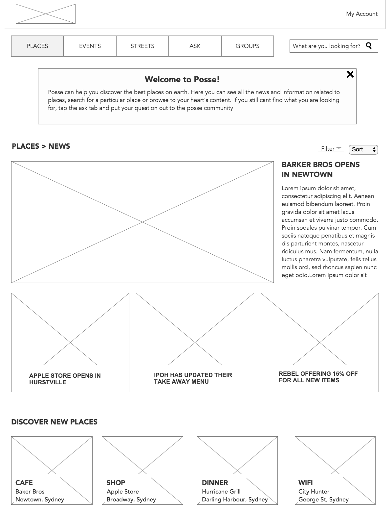 Jan 14Final Prototype
Following the positive results from the last round of testing I created a final version of the prototype again increasing the fidelity to help put it in context for the client. We did a final round of testing with five users and the results were very positive.
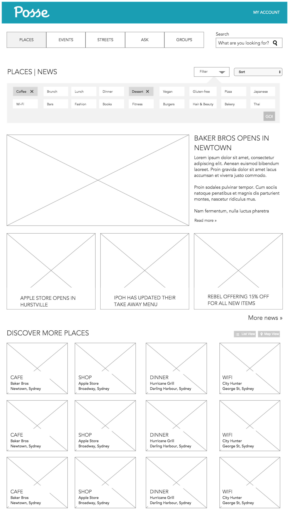 Jan 14Testing Results
We received positive feedback with users saying they had the urge to explore the site, they could easily identify the functions and features by the names and said they would check the website regularly. The users were especially positive about the "ask" and news features of the site, they found them to be valuable and original
 Jan 14
Jan 14
Final Presentation
We presented our research, ideas and clickable prototype to five staff members. Posse was very happy with the results and said our findings were in line with their own. They plan to implement our suggest in the coming months. Upon handing over the documents prototype and all of our research we recommend that Posse carry out a tactical redesign from the heuristic analysis, conduct further testing on our prototype and prioritize which features to integrate and finally engage a UX consultant for change aversion.
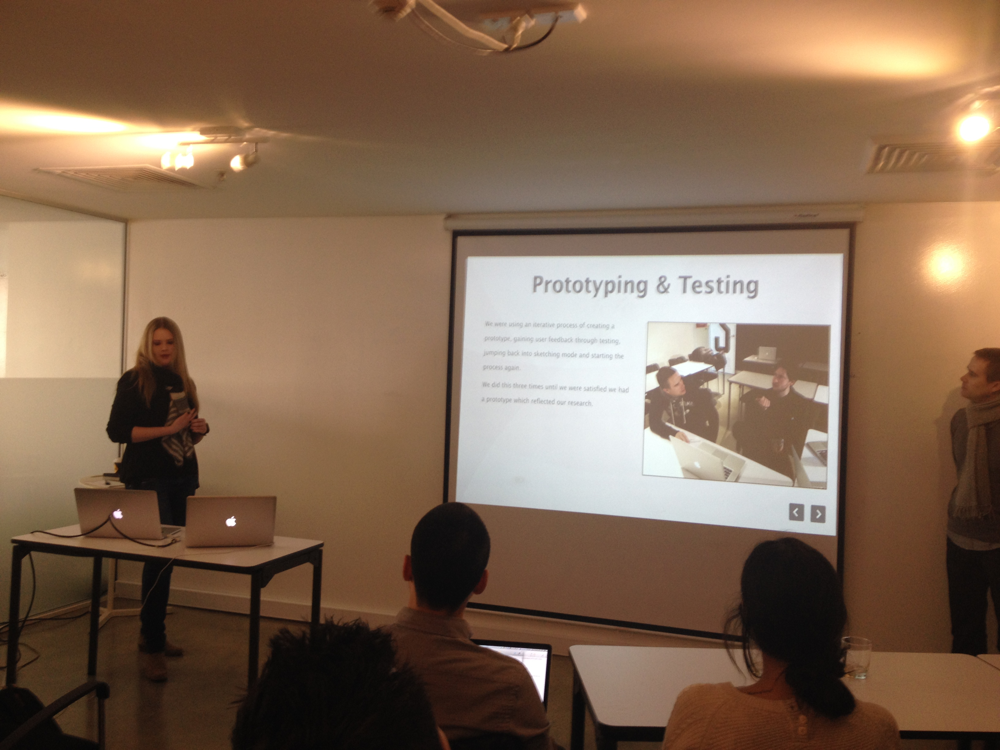 Jan 14